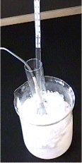
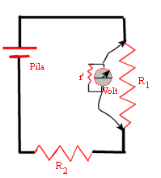

Ejemplos:
 |
1.- Si para medir la temperatura de una muestra introducimos un termómetro que está más caliente que ella, la muestra se calienta por efecto del termómetro y lo que realmente leemos es el resultado de la interrelación muestra - termómetro y no la temperatura de la muestra. 2.-Al intercalar un instrumento de medida (el voltímetro de la figura) en un circuito eléctrico introducimos un componente que no tenía el circuito (la resistencia del voltímetro) y el resultado de la medida reflejará esta alteración. |
 |
| 1 |
2 |